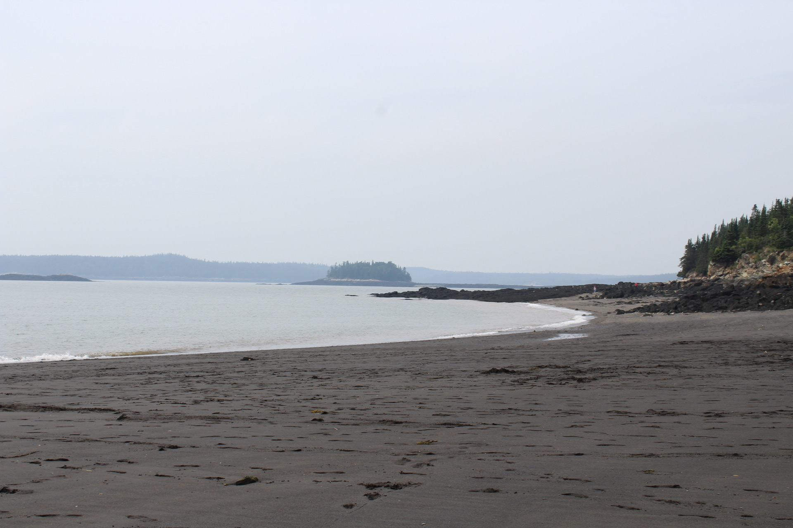

Léanne Archambault
Étudiante à la maîtrise en science politique
Candidate à la maîtrise en science politique sous la direction d'Alexandre Gajevic Sayegh, je me spécialise dans l'étude des politiques climatiques, de la justice environnementale et de l'action publique au Canada et au Québec. Titulaire d'un baccalauréat en science politique avec mention d'honneur de la doyenne, j'allie rigueur méthodologique, intérêt pour l'analyse de données et engagement dans la recherche universitaire.
Mes principaux intérêts de recherche portent sur la transition écologique, les politiques publiques, les enjeux des communautés autochtones ainsi que le comportement électoral et la participation politique.
Domaines d'expertise & Compétences
Formée aux outils méthodologiques interdisciplinaires et active au sein de plusieurs équipes de recherche, mes champs d'intervention couvrent l'analyse empirique et la vulgarisation scientifique.
Mon CV
Curriculum vitae académique généré avec Quarto. Vous pouvez le parcourir ci-dessous ou l'ouvrir en plein écran.
Me joindre
Pour toute question sur mes recherches, opportunités d'assistanat ou collaborations académiques, n'hésitez pas à m'écrire.